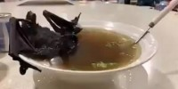

Pagina Inicial
Sopa de Morcego

Ingredientes:
- 2 kg de macarrão comprido
- 3 batatas médias
- cebola
- 2 kg de peito de Morcego
- cenoura grande
- 3 cubos de caldo de galinha
- Pimenta - do - reino a gosto
- 3 dentes de alho
Modo de Preparo:
- Em uma panela doure o Morcego, a cebola e os alhos.
- Quando estiverem dourados, coloque o resto dos ingredientes bem picados, menos o macarrão em aproximadamente um litro de água.
- Quando a água estiver fervendo, coloque o macarrão e sirva quente.